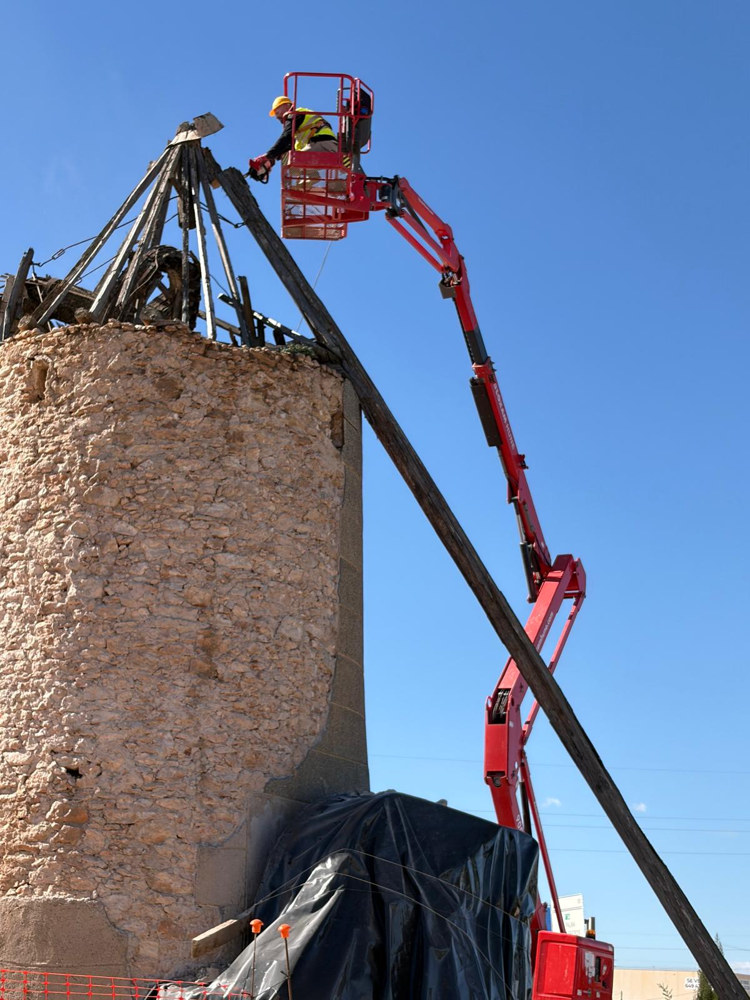
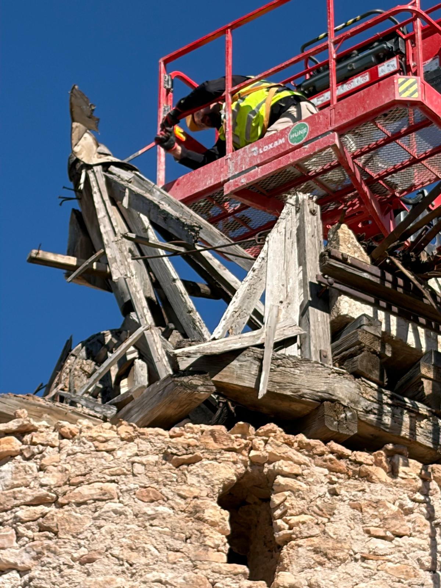
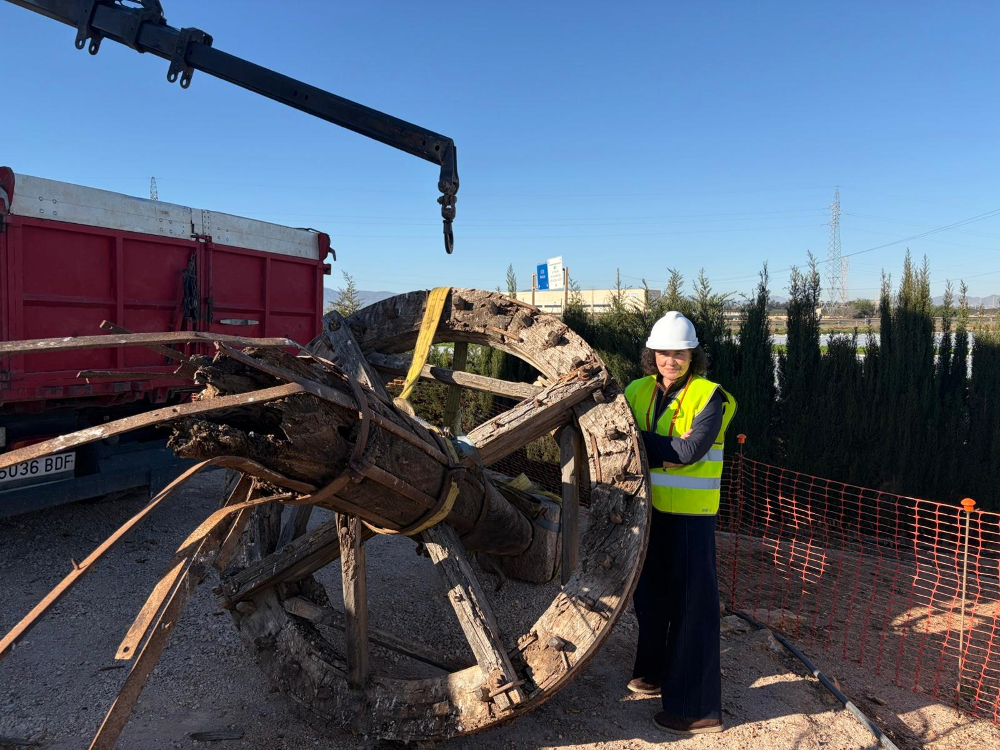
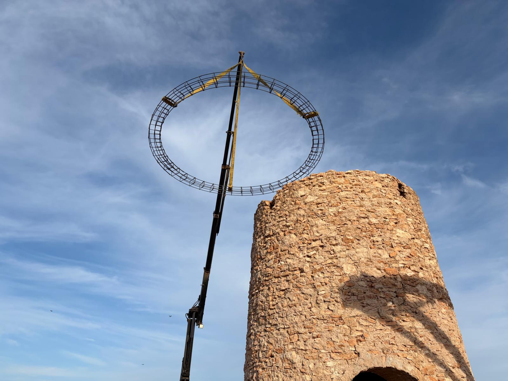
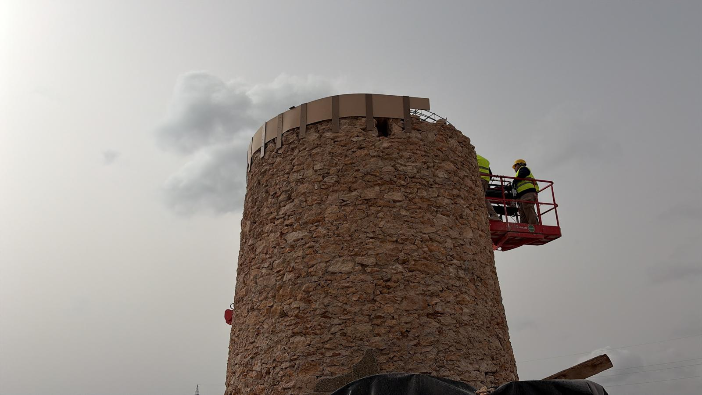
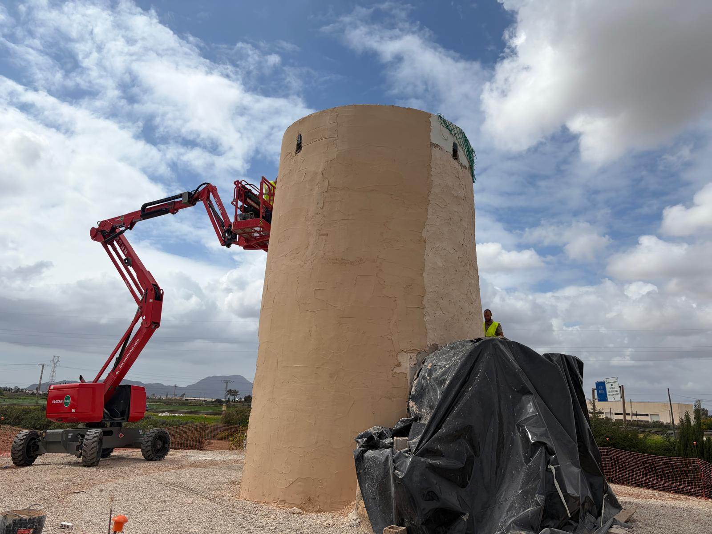
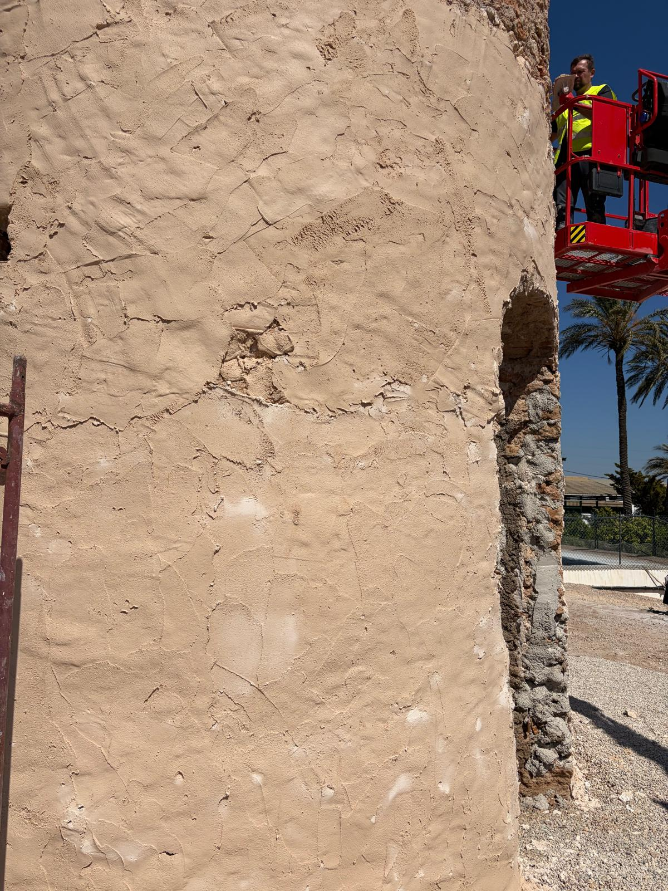
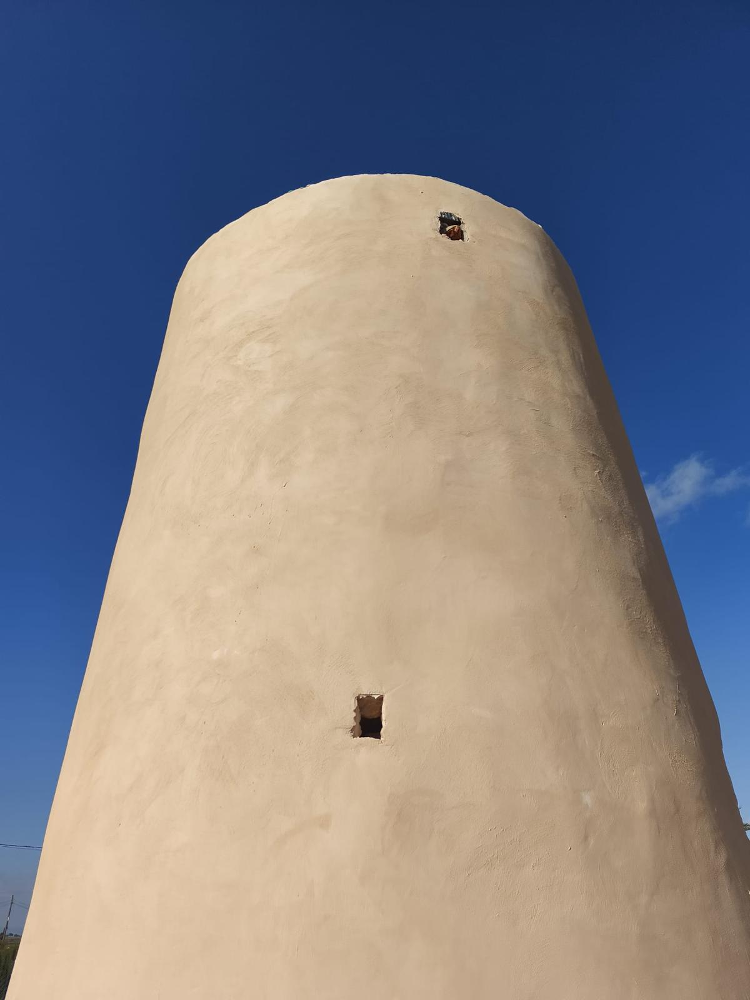

Avance de las Obras
Seguimiento fotográfico y en vídeo de los trabajos de restauración en curso.
📸 Fotografías de los Trabajos

Grúa — Colocación
Vista general de la grúa durante los trabajos de colocación

Grúa — Detalle
Detalle del proceso de colocación con la grúa

Rueda Desmontada
La rueda de arcaduces tras ser retirada para su restauración
🎬 Vídeo — Extracción de la Rueda
Proceso de extracción de la rueda de arcaduces durante los trabajos de restauración
📸 Restauración de la Corona Metálica y Fachada (marzo 2026)

Colocación de la Corona
Instalación de la corona metálica superior del molino

Sellado de la Corona
Trabajos de sellado e impermeabilización de la corona metálica

Colocación de la Corona — Detalle
Detalle del proceso de instalación de la corona metálica

Cubrimiento de la Fachada
Proceso de revestimiento y acabado de la fachada exterior

Colocación de la Fachada
Instalación de los paneles de revestimiento en la fachada exterior

Fachada Terminada
Resultado final de la restauración de la fachada exterior
🎬 Vídeo — Corona Terminada
Vista de la corona metálica una vez finalizados los trabajos de instalación